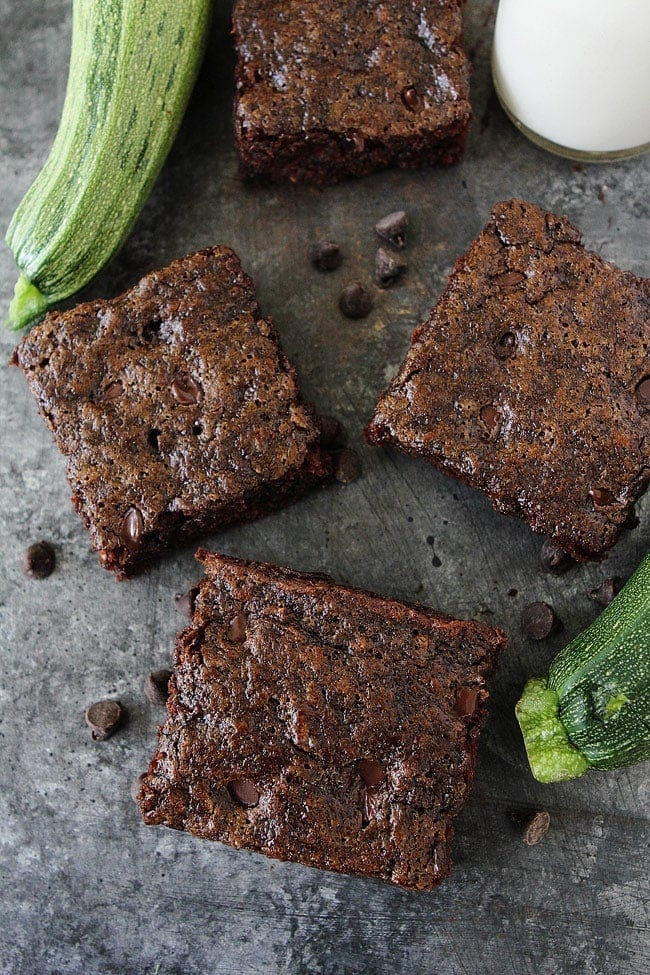

Zucchini Brownies

Zucchini brownies are a healthier recipe for brownies, and these are the BEST
zucchini brownies ever! They’re ooey, gooey, and SUPER fudgy brownies. And NO one
will know they have zucchini inside!
Ingredients:
- One half cup vegetable oil
- One and one half cups white sugar
- 2 teaspoons vanilla extract
- 2 cups all-purpose flour
- One half cup unsweetened cocoa powder
- One and one half teaspoons baking soda
- One teaspoon salt
- 2 cups shredded zucchini
- One half cup chopped walnuts
For the frosting:
- 6 tablespoons unsweetened cocoa powder
- One fourth cup margarine
- 2 cups confectioner's sugar
- One fourth cup milk
- ONe half teaspoon vanilla extract
Directions:
- Preheat oven to 350 degrees F (175 degrees C). Grease and flour a
9x13 inch baking pan.
- In a large bowl, mix together the oil, sugar and 2 teaspoons vanilla
until well blended. Combine the flour, 1/2 cup cocoa, baking soda and salt;
stir into the sugar mixture. Fold in the zucchini and walnuts. Spread evenly
into the prepared pan.
- Bake for 25 to 30 minutes in the preheated oven, until brownies spring back
when gently touched.
- Make frosting while brownies cool. Melt together the 6 tablespoons of cocoa
and margarine; set aside to cool.
- Meanwhile, blend together the confectioners' sugar, milk and 1/2 teaspoon
vanilla. Stir in the cocoa mixture. Spread over cooled brownies before
cutting into squares.
Nutritional Facts:
Per Serving:
209 calories; protein 2.3g; carbohydrates 32.9g; fat 8.6g;
cholesterol 0.2mg; sodium 199.9mg.